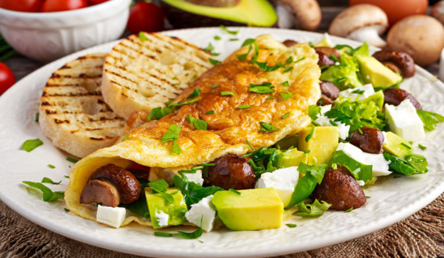
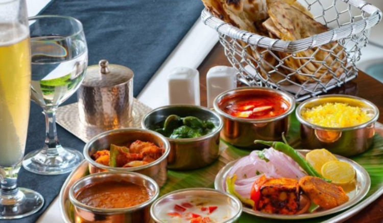
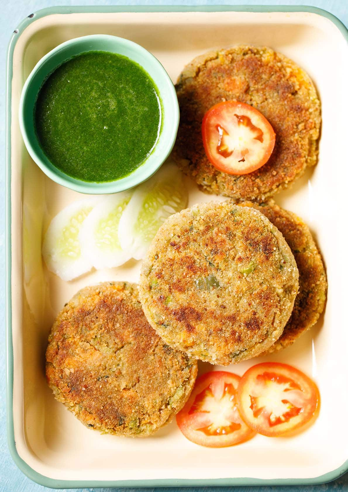

JASMINE'S VEG RECIPIES
 
BreakFast
Lunch
RICE
CURRY
Search and Filter Recipies
All
American Recipies(118)
Andhra Recipes (27)
Bnegali-Cuisines(32)
Bevarages
Chutney
Cakes
Desserts
Cookies
Dal
By Ingredient
Milk
Rice flour
Paneer
Curd
Carrots
Cauliflower
Chocolate
Wheatflour
Mix Vegetable
Cuisines
Indian
Italian
Mexican
Chinese
South-Indian
Maharashtra
Punjab
Gujarati
Rajasthani

🔗Snacks Recipies
Cutlet Recipe
🔗Panch Phoron(Bengali 5 spice mix) Recipies
Cutlet Recipe